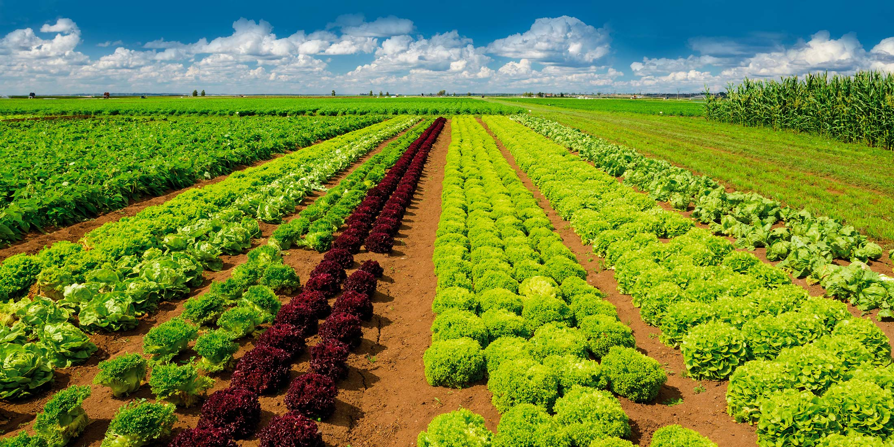
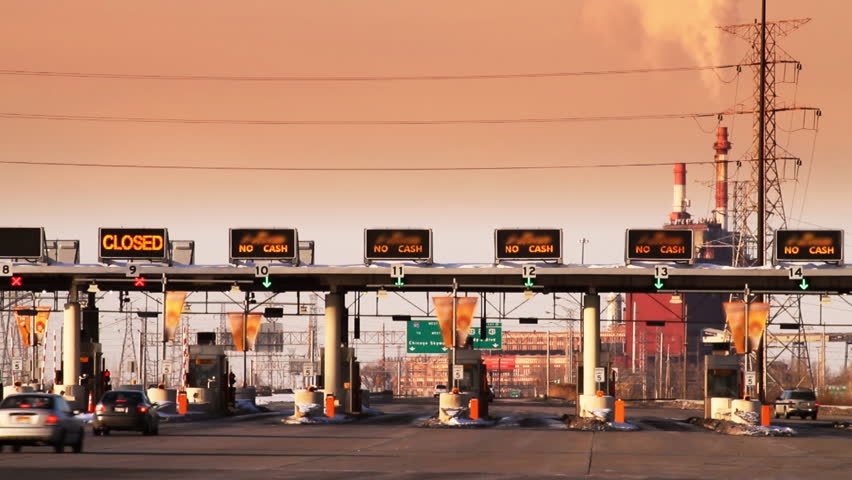
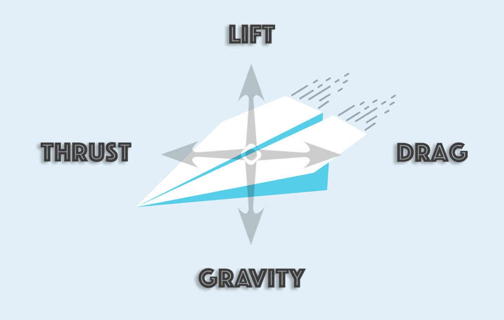
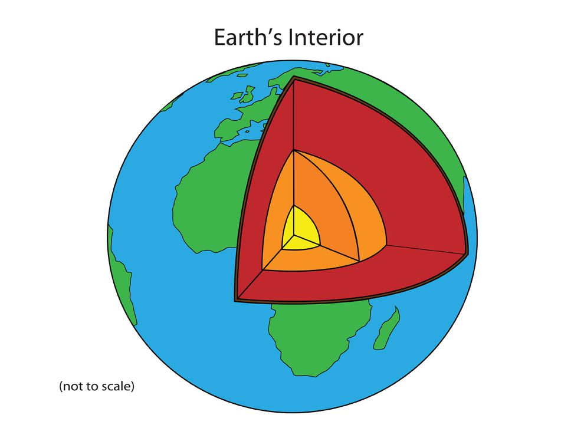

RD number 1
CHCOCOLATE MISTERY
The cacao tree, once native to the equatorial American forest, has some exotic traits for a plant. Slender and shrubby, the cacao has adapted to life close to the leaf littered forest floor. Its large leaves droop down. away from the sun. Cacao doesn't flower, as most plants do at the tips of its outer and uppermost branches. Instead. its sweet white buds hang from the trunk and along a few Fat branches which form where leaves drop off. These tiny Flowers transform into pulp-filled pods almost the size of rugby balls. The low-hanging pods contain the bitter-tasting magical seeds.
Somehow, more than 2,000 years ago. ancient humans in Mesoamerica discovered the secret of these beans. If you scoop them from the pod with their pulp. let them ferment and dry in the sun, then roast them over a gentle fire, something extraordinary happens: they become chocolaty. And if you then grind and press the beans, which are half-cocoa butter or more, you will obtain a rich crumbly. chestnut brown paste - chocolate at its most pure and simple.
The Maya and Aztecs revered this chocolate, which they Frothed up with water and spices to make bracing concoctions. It was an edible treasure, offered up to their gods, used as money and hoarded like gold. Long after Spanish explorers introduced the beverage to Europe in the sixteenth century. chocolate retained an aura of aristocratic luxury. In 1753. the Swedish botanist Carolus Linnaeus gave the cacao tree genus the name Theobroma. which means 'food of the gods. In the last 200 years, the bean has been thoroughly democratized - transformed from an elite drink into ubiquitous candy bars, cocoa powders and confections. Today chocolate is becoming more popular worldwide, with new markets opening up in Eastern Europe and Asia. This is both good news and bad because. Although farmers are producing record numbers of the cacao bean, this is not enough, some researchers worry, to keep pace with global demand. Cacao is also facing some alarming problems.
Philippe Petithuguenin, head of the cacao program at the Centre For International Cooperation in Development-Oriented Agricultural Research (CiRAD) in France, recently addressed a seminar in the Dominican Republic. He displayed a map of the world revealing a narrow band within 180 north and south of the equator. where cacao grows. In the four centuries since the Spanish first happened upon cacao, it has been planted all around this hot humid tropical belt - from South America and the Caribbean to West Africa, East Asia, and New Guinea and Vanuatu in the Pacific.
Today 70% of all chocolate beans come from West Africa and Central Africa. In many parts, growers practice so-called pioneer Farming. They strip patches of forest of all but the tallest canopy trees and then they put in cacao, using temporary plantings of banana to shade the cacao while it's young. With luck, groves like this may produce annual yields of 50 to 60 pods per tree for 25 to 30 years. But eventually, pests, pathogens and soil exhaustion take their toll and yields diminish. Then the growers move on and clear a new forest patch - unless farmers of other crops get there first. 'You cannot keep cutting the tropical forest, because the forest itself is endangered: said Petithuguenin. 'World demand for chocolate increases by 3% a year on average. With a lack of land for new plantings in tropical forests, how do you meet that?'
Many farmers have a more imminent worry: outrunning disease. Cacao, especially when grown in plantations, is at the mercy of many afflictions, mostly rotting diseases caused by various species of fungi which cover the pods in fungus or kill the trees. These fungi and other diseases spoil more than a quarter of the world's yearly harvest and can devastate entire cacao-growing regions.
One such disease, witches broom, devastated the cacao plantations in the Bahia region of Brazil. Brazil was the third largest producer of cacao beans but in the 1980s the yields fell by 75%. According to Petithuguenin, 'if a truly devastating disease like witches broom reached West Africa (the world's largest producer), it could be catastrophic.' If another producer had the misfortune to falter now, the ripples would be felt the world over. In the United States, for example, imported cacao is the linchpin of an $8.6 billion domestic chocolate industry that in turn supports the nation's dairy and nut industries; 20% of all dairy products in the US go into confectionery.
Today research is being carried out to try to address this problem by establishing disease-resistant plants. However. even the best plants are useless if there isn't anywhere to grow them. Typically, farmers who grow cacao get a pittance for their beans compared with the profits reaped by the rest of the chocolate business. Most are at the mercy of local middlemen who buy the beans then sell them for a much higher price to the chocolate manufacturers. If the situation is to improve for farmers, these people need to be removed from the process. But the economics of cacao is rapidly changing because of the diminishing supply of beans. Some companies have realized that they need to work more closely with the farmers to ensure that sustainable farming practices are used. They need to replant areas and create a buffer for the forest, to have ground cover, shrubs and small trees as well as the canopy trees. Then the 'soil will be more robust and more productive. They also need to empower the farmers by guaranteeing them a higher price for their beans so that they will be encouraged to grow cacao and can maintain their way of life.

Seed
A small, round or oval object produced by a plant and from which, when it is planted, a new plant can grow

Crops
(the total amount collected of) a plant such as a grain, fruit, or vegetable grown in large amounts. /Commodities produced from the earth which are planted, raised, and gathered within the course of a single season.

Toll
Is a tax or fee paid for some liberty or privilege (as of passing over a highway or bridge)./a small amount of money that you have to pay to use a road.
Withches' broom
According to the Ministry of Food Production, Witches’ Broom is a disease of cocoa caused by the
fungus Moniliophthora perniciosa on cocoa. The
infection causes numerous broom-like shoots to
sprout, thus the term “Witches’ Broom”.
Brooms when formed are alive and green, but
eventually die giving the characteristic dry Witches’
Broom attached to the tree.
RD number 2
Gravity: Always present
Without forces of gravitation, Earth and other planets would be unable to stay in their orbits around the Sun. the Moon would be unable to orbit the Earth, tidal waves would not occur and the rising of hot air or water convection would be impossible. Gravitation is a phenomenon winch allows objects to attract other matter; the physics behind it have been explained in The Theory of Relativity and Newton’s Law of Universal Gravitation; though attempts to explain gravity hail back to ancient times. In 4th Century B.C. the Greek philosopher Aristotle developed the hypothesis that all objects were drawn into their correct position by crystalline spheres and that a physical mass would fall towards the earth in direct proportion to its weight. In the late 16th century Galileo deduced that while gravitation propels all objects to the ground at the same rate, air resistance resulted in heavier objects appearing to fall more quickly; his theories contradicting earlier belief systems put in place by Aristotle and others; so paving the way for formulation of the modern theories of today.
Though the two terms are now used interchangeably in layman use, strictly by scientific definition, there are distinct differences between ‘gravitation’ and ‘gravity’. The first relates to the influence exerted by different objects which allow them to attract other objects, whereas ‘gravity’ refers specifically to the force possessed by such objects which facilitates gravitation. Certain scientific theories hold that gravitation may be initiated by a combination of factors and not simply the existence of gravity alone; though doubts have been raised regarding some of these theories. Though the two terms are now used interchangeably in layman use, strictly by scientific definition, there are distinct differences between ‘gravitation’ and ‘gravity’. The first relates to the influence exerted by different objects which allow them to attract other objects, whereas ‘gravity’ refers specifically to the force possessed by such objects which facilitates gravitation. Certain scientific theories hold that gravitation may be initiated by a combination of factors and not simply the existence of gravity alone; though doubts have been raised regarding some of these theories. Gravity is directly proportional to mass; a smaller object possessing less gravity. To illustrate, the Moon is a quarter of the Earth’s size and possesses only 1/6 of its gravity. The mass of the Earth itself is not spread out proportionally, being flatter at the poles than the equator as a result of its rotation; gravity and gravitational pull in different locations throughout the world also vary.
More recently a second conjecture suggested that, in fact, lower levels of gravity in the area are a result of occurrences during the Ice Age. The Laurentide Sheet, which covered most of Canada and the northern tip of the USA until it melted 10,000 years ago, is thought to have been 3.2 kms thick in most parts and 3.7 kms thick over two areas of Hudson Bay. The sheer weight of the ice layer weighed down the surface of the earth below, leaving a deep indentation once it had melted, having caused the area around Hudson Bay to become thinner as the earth’s surface was pushed to the edges of the ice sheet. Extensive investigation has since been carried out by the Harvard-Smithsonian Center for Astrophysics using data collected by satellites during the Gravity Recovery and Climate Experiment (GRACE) between 2002 and 2006. The satellites are placed 220kms apart and orbit 500kms above Earth. Being extremely sensitive to even minor differences in gravitational pull of the areas of earth they pass over, as the first satellite enters an area with decreased gravity it moves slightly away from the earth as the gravitational pull is reduced and also moves slightly further away from the sister satellite that follows.

Propels
To cause to move forward or onward./ to push or move something somewhere, often with a lot of force.
Tidal
an unusually high sea wave that is triggered especially by an earthquake./ n unusual rise of water alongshore due to strong winds.

Layer
The structure of the Earth is divided into layers. These layers are both physically and chemically different. The Earth has an outer solid layer called the crust, a highly viscous layer called the mantle, a liquid layer that is the outer part of the core, called the outer core, and a solid center called the inner core.
Flatter
Give an unrealistically favourable impression of.
RD number 3
Why do companies go bankrupt?
Small companies vary greatly concerning the sorts of merchandise and services they supply, but all businesses will need to produce sales and earn revenue to endure. When firms aren’t profitable for protracted periods, owners might be forced to enter bankruptcy to leave the marketplace or reorganize the enterprise. While insufficient profitability is the principal motive for the majority of bankruptcies, many inherent factors can impair a organization’s ability to generate gain and result in bankruptcy.
Should business owners or individuals who went through bankruptcy and wouldn’t have enough finances to support himself, he’ll need an income support. An income support is an income-related benefit for some people who have less income. Reach income support contact number for more details.
Funding is among the principal challenges that businesses face. Many small business owners take out loans to help fund their operations. If a company fights, his lender might not be eager to grant extra financing, which might result in bankruptcy. Even if an operator can secure more funding to keep his business afloat in the short term, higher debt makes it harder for a business to be profitable since it must cover the debt.
It can also be Market competition. Poor states in general market and the particular market where a company operates are typical causes of insolvency. During prolonged periods, customer confidence and spending have a tendency to diminish, which may result in reduced earnings. Firms involved in particular niche markets may also be vulnerable to changes in customer tastes. Competition from larger businesses is another industry variable that may cut in the earnings of small businesses and cause bankruptcy.
Lack of preparation and level-heading thinking may result in hasty conclusions and company failure. By way of instance, a company owner may spend some time and money creating a product she thinks in without surveying clients and analyzing production prices to gauge if the item could be rewarding. Even if the item is helpful, it may not be financially feasible from a business perspective. Deficiency of education and expertise in management and finance can increase the probability of bad conclusions, but no organization is immune to making mistakes.
Bankruptcy could result from a bunch of other inherent issues that inhibit adulthood. A few other aspects which could give rise to bankruptcy comprise poor company place, loss of important workers, lawsuits increased by opponents and individual issues like divorce or illness. Unforeseen offenders and criminal action like storms, floods, fires, theft and fraud may also bring about hardships that cause bankruptcy.
From WTC Memorial
Profitability
The higher the ratio, the better it is as it means the company is performing well. / Profitability analysis help businesses to identify growth opportunities, fast-slow moving stock items, market trends, etc.
Eager
wanting very much to do or have something, especially something interesting or enjoyable.

Hasty
made or done with haste or speed: a hasty visit. unduly quick; precipitate; rash: a hasty decision.
Theft
dishonestly taking something that belongs to someone else and keeping it. / the act of stealing something.
RD number 4
Why is important to learn english?
Speaking English allows you to actually broaden your world, from job opportunities to the ability to relate to people from every country.
Knowing the language makes it much more interesting every trip.
Anywhere you want to go in the world you can find someone who speaks English. If we account only the country where the English language is the official language, the United Kingdom, Australia, U.S.A., Canada, Ireland, New Zealand and the Caribbean countries, there are more than 400 million native English speakers.
Simply put, we must recognize that English is an international language, the main language of this planet.
statistics reveal that more than a quarter of the world’s population speaks English that means that about 1.6 billion people understand and relate with the help of the language of Shakespeare. To not mention that most of the films are in English, the largest film industry, Hollywood, is produced in English.
It is true that in the world are more than 3 billion people who speak Chinese, however it is very unlikely that in addition to the mother tongue there is someone else who wants to learn Chinese characters.
Most of the international trade agreements are concluded in English and is the most widely used language for international business meetings.
Good English is not only classy but a possibility to continue studies and specializations in the best universities in the world, which are in fact, in countries where they speak English.
Education is very important to improve yourself but learning English also improves the quality of life. You have access to jobs that you could not even take into consideration, you can evaluate an international career and you can live in many countries with the ease of being able to go shopping or negotiate rent for the house.
The benefits they bring in the life of a person’s knowledge of the English language are countless. What is important to understand is that the English language is able to knock down a lot of barriers, including cultural ones.
Knowing the habits and customs of other countries allows us to understand ourselves and others. By better understanding our fellow man around the world we are always surprised at how we are different and similar at the same time.
The English language allows us to relate and therefore to understand each other.
From Malta University Language School.
Widely
o the side of or at a distance from a given boundary, limit, or goal./ including a lot of different places, people, subjects, etc.
Ease
to make or become less severe, difficult, unpleasant, painful, etc.
Knock down
to destroy and remove a building, wall, or other structure.
Customs
a habitual practice; the usual way of acting in given circumstances. / fashions, habits, habitudes, patterns, practices, rituals, tricks.